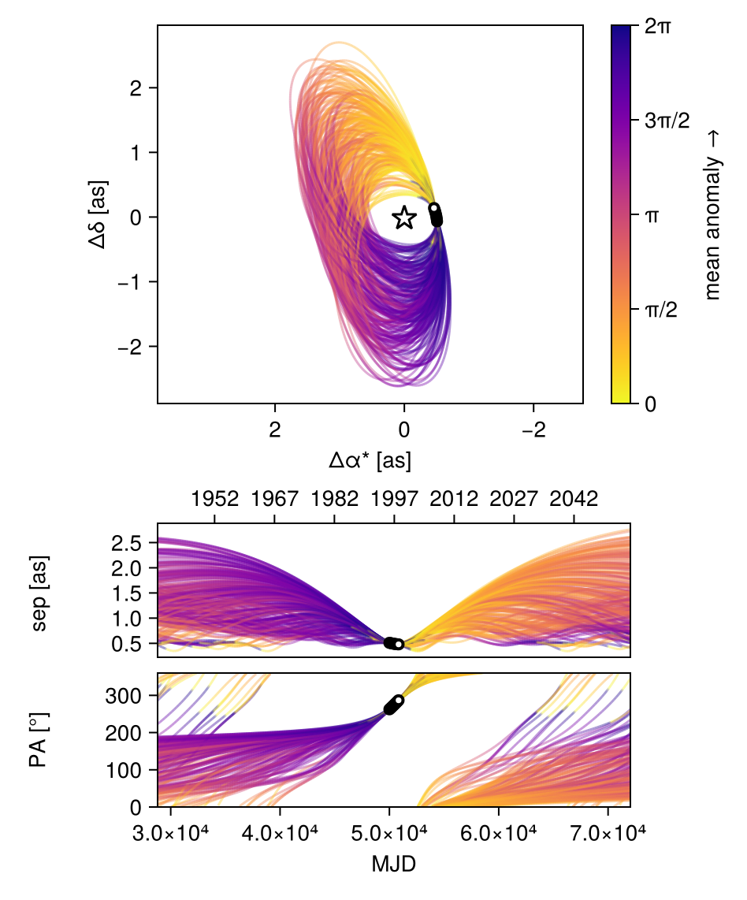
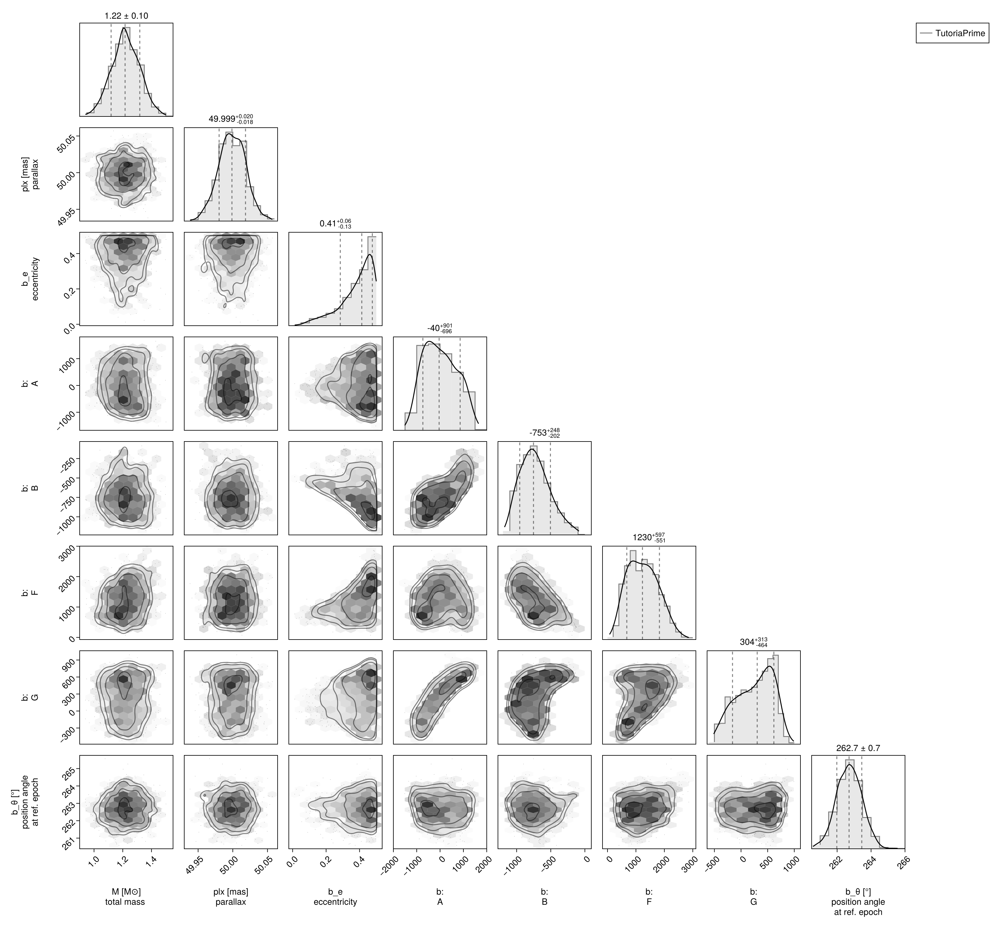
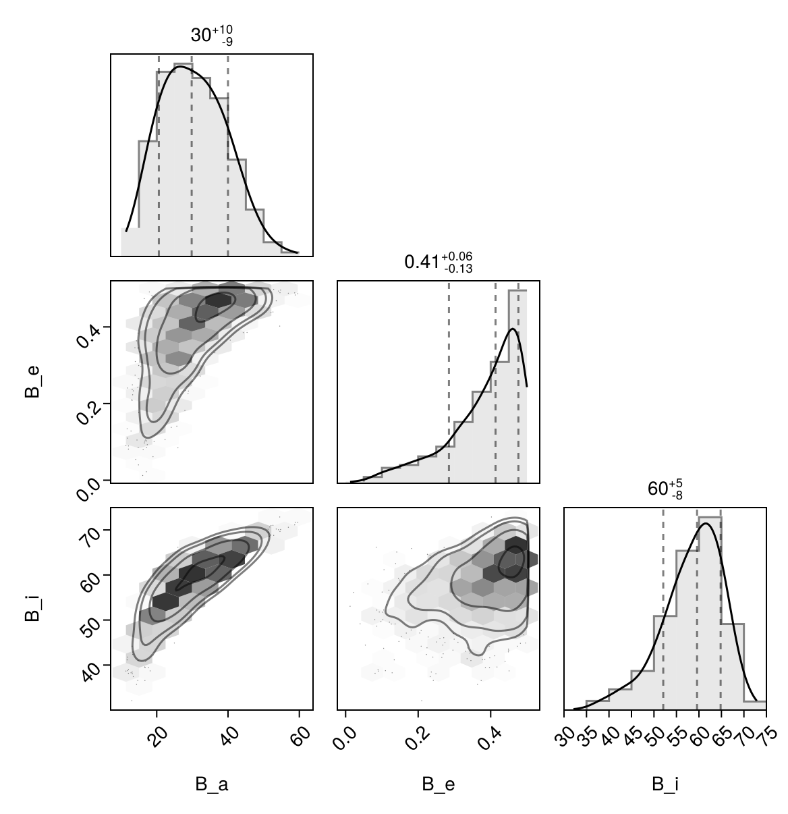

Fit with a Thiele-Innes Basis
This example shows how to fit relative astrometry using a Thiele-Innes orbital basis instead of the traditional Campbell basis used in other tutorials. The Thiele-Innes basis is more suitable then Campbell for fitting low-eccentricity orbits, because it does not have the issues where ω, Ω, and tp become degenerate as eccentricity and/or inclination fall to zero.
At the end, we will convert our results back into the Campbell basis to compare.
using Octofitter
using CairoMakie
using PairPlots
using Distributions
astrom_like = PlanetRelAstromLikelihood(
(epoch = 50000, ra = -505.7637580573554, dec = -66.92982418533026, σ_ra = 10, σ_dec = 10, cor=0),
(epoch = 50120, ra = -502.570356287689, dec = -37.47217527025044, σ_ra = 10, σ_dec = 10, cor=0),
(epoch = 50240, ra = -498.2089148883798, dec = -7.927548139010479, σ_ra = 10, σ_dec = 10, cor=0),
(epoch = 50360, ra = -492.67768482682357, dec = 21.63557115669823, σ_ra = 10, σ_dec = 10, cor=0),
(epoch = 50480, ra = -485.9770335870402, dec = 51.147204404903704, σ_ra = 10, σ_dec = 10, cor=0),
(epoch = 50600, ra = -478.1095526888573, dec = 80.53589069730698, σ_ra = 10, σ_dec = 10, cor=0),
(epoch = 50720, ra = -469.0801731788123, dec = 109.72870493064629, σ_ra = 10, σ_dec = 10, cor=0),
(epoch = 50840, ra = -458.89628893460525, dec = 138.65128697876773, σ_ra = 10, σ_dec = 10, cor=0),
)
@planet b ThieleInnesOrbit begin
e ~ Uniform(0.0, 0.5)
A ~ Normal(0, 10000) # milliarcseconds
B ~ Normal(0, 10000) # milliarcseconds
F ~ Normal(0, 10000) # milliarcseconds
G ~ Normal(0, 10000) # milliarcseconds
θ ~ UniformCircular()
tp = θ_at_epoch_to_tperi(system,b,50000.0) # reference epoch for θ. Choose an MJD date near your data.
end astrom_like
@system TutoriaPrime begin
M ~ truncated(Normal(1.2, 0.1), lower=0.1)
plx ~ truncated(Normal(50.0, 0.02), lower=0.1)
end b
model = Octofitter.LogDensityModel(TutoriaPrime)LogDensityModel for System TutoriaPrime of dimension 9 and 9 epochs with fields .ℓπcallback and .∇ℓπcallback
We now sample from the model as usual:
using Random
Random.seed!(0)
results = octofit(model)Chains MCMC chain (1000×24×1 Array{Float64, 3}):
Iterations = 1:1:1000
Number of chains = 1
Samples per chain = 1000
Wall duration = 5.51 seconds
Compute duration = 5.51 seconds
parameters = M, plx, b_e, b_A, b_B, b_F, b_G, b_θy, b_θx, b_θ, b_tp
internals = n_steps, is_accept, acceptance_rate, hamiltonian_energy, hamiltonian_energy_error, max_hamiltonian_energy_error, tree_depth, numerical_error, step_size, nom_step_size, is_adapt, loglike, logpost, tree_depth, numerical_error
Summary Statistics
parameters mean std mcse ess_bulk ess_tail ⋯
Symbol Float64 Float64 Float64 Float64 Float64 Flo ⋯
M 1.2199 0.0979 0.0037 690.0863 659.1198 1. ⋯
plx 49.9990 0.0193 0.0007 864.8107 429.0715 1. ⋯
b_e 0.3844 0.1014 0.0049 353.6463 314.6059 1. ⋯
b_A 15.1972 689.1413 57.9932 147.3194 324.9187 1. ⋯
b_B -728.6003 217.4695 19.0139 139.2140 103.8323 1. ⋯
b_F 1252.6436 533.2954 49.6101 101.7432 126.6033 1. ⋯
b_G 255.4017 340.0823 27.2910 156.8142 262.2811 1. ⋯
b_θy -0.1271 0.0179 0.0008 557.7819 566.2194 1. ⋯
b_θx -0.9936 0.0975 0.0041 570.4733 710.4374 1. ⋯
b_θ -1.6980 0.0129 0.0005 585.6764 562.3619 0. ⋯
b_tp 18953.9644 33581.0073 2333.6759 297.2816 316.8330 1. ⋯
2 columns omitted
Quantiles
parameters 2.5% 25.0% 50.0% 75.0% 97.5% ⋯
Symbol Float64 Float64 Float64 Float64 Float64 ⋯
M 1.0219 1.1546 1.2162 1.2861 1.4104 ⋯
plx 49.9605 49.9862 49.9988 50.0124 50.0361 ⋯
b_e 0.1259 0.3318 0.4134 0.4647 0.4965 ⋯
b_A -1074.8648 -553.1139 -40.0223 545.3164 1263.4539 ⋯
b_B -1078.7075 -892.9830 -753.0811 -594.3758 -236.6789 ⋯
b_F 391.5329 822.3414 1229.6340 1643.0625 2312.2931 ⋯
b_G -410.6911 -11.1625 303.8563 549.2108 764.4901 ⋯
b_θy -0.1638 -0.1392 -0.1259 -0.1149 -0.0963 ⋯
b_θx -1.1891 -1.0623 -0.9914 -0.9215 -0.8194 ⋯
b_θ -1.7234 -1.7069 -1.6981 -1.6891 -1.6735 ⋯
b_tp -53262.1671 -7192.6457 27421.0617 48577.1706 49830.9508 ⋯
Notice that the fit was very very fast! The Thiele-Innes orbital paramterization is easier to explore than the default Campbell in many cases.
We now display the results:
octoplot(model,results)
octocorner(model, results, small=false)
Conversion back to Campbell Elements
To convert our chain into the more familiar Campbell parameterization, we have to do a few steps. We start by turning the chain table into a an array of orbit objects, and then convert their type:
orbits_ti = Octofitter.construct_elements(model, results, :b, :) # colon means all rows1000-element Vector{ThieleInnesOrbit{Float64}}:
ThieleInnesOrbit{Float64}(0.4968641838435097, 49395.961800461584, 1.3407533985788702, 49.99574850496512, -421.2388012477314, -1095.0292298544264, 2067.9064414486525, 395.93999817992625, -37.62031845996592, -13.874100504331023, 93134.52245733197, 0.024641060832182066, 1.7248390718115292)
ThieleInnesOrbit{Float64}(0.48783333943887125, 48985.408959541935, 1.3394744863338754, 49.98638434288757, -596.9356239957135, -1104.7899079380306, 1931.1796127616547, 337.19754922308084, -34.84216774856936, -17.520763204714296, 88846.87537208432, 0.025830209828272832, 1.7043998634658728)
ThieleInnesOrbit{Float64}(0.49878470375125455, 47973.61984644754, 1.2325728729328311, 49.97174430496417, -1004.3433057308306, -807.2899510667205, 656.5056336553166, -472.56484291274086, -5.356046411175129, -20.774614690701615, 44465.94049658973, 0.05161103999640695, 1.729248739722322)
ThieleInnesOrbit{Float64}(0.4995167008048345, 48386.542030748664, 1.3488939809820608, 50.02278118444367, -945.0664195744736, -1036.8033306332647, 1263.3199077293027, -159.61058499069736, -18.64209216156699, -22.046879868231777, 61458.96165010365, 0.03734090801131316, 1.7309353945423662)
ThieleInnesOrbit{Float64}(0.4659181544040126, 47403.72563254077, 1.1617517208330774, 50.01127250549137, -1068.610200740886, -831.2840188638523, 702.4324470784472, -402.09648058088936, -7.27352321009566, -22.88752836888342, 50293.09676624246, 0.04563118163341535, 1.6567270140796662)
ThieleInnesOrbit{Float64}(0.4750982385560938, 47228.97244968231, 1.095372090823942, 50.000287589802475, -1116.2691196771711, -892.3967866183127, 793.6758754689457, -372.17143853719773, -9.101519596349814, -24.33988734035222, 57335.948268407905, 0.040026083159975426, 1.6763760870004483)
ThieleInnesOrbit{Float64}(0.43783744110234035, 48533.25805119575, 1.04657342791528, 49.998288522064996, -681.0754742632367, -885.223771125542, 811.2105473795659, -220.97877596004125, -8.423845024318526, -16.947338171577567, 41649.86529493042, 0.05510062078704203, 1.5992778985901286)
ThieleInnesOrbit{Float64}(0.45944256360932695, 48718.28184661983, 1.0431179747667274, 50.011936037030864, -664.2673712216483, -917.310510006224, 888.6809043989323, -207.91688324759025, -9.6653250861103, -16.529466577791325, 43694.27756261734, 0.05252251693962724, 1.6431324814270774)
ThieleInnesOrbit{Float64}(0.2541349444919068, 48271.64105555139, 1.3721298011981848, 50.01168307568658, -632.5417684536383, -707.7678216065467, 905.603894499803, -105.71520524423238, -13.625535600095802, -14.613086276064635, 35215.867679813484, 0.06516759587789031, 1.296707444631597)
ThieleInnesOrbit{Float64}(0.4849638132797053, 48489.697035982674, 1.081608324844559, 50.009578413702926, -807.9147348805295, -969.7809153159847, 1051.5500562614318, -207.41115568875531, -13.609539739193513, -19.050491203257973, 53928.54390150922, 0.04255507876568347, 1.6980053854942097)
⋮
ThieleInnesOrbit{Float64}(0.4854780899573267, 49258.10313726656, 1.2711440616917387, 50.02577642957504, -484.15762051709527, -1036.6808870460582, 1922.3932908700076, 241.09484425961526, -34.168487675994506, -13.807615741769077, 85414.22905128486, 0.02686828013245203, 1.6991479219384167)
ThieleInnesOrbit{Float64}(0.47170887457515354, -16017.94701268898, 1.3347692245845195, 49.99925374975994, 18.765731385479995, -923.9478852727791, 1716.533672008218, 361.89074589426485, -30.09198592914015, -4.016553774072266, 66349.01769055618, 0.034588807993369795, 1.6690690223201672)
ThieleInnesOrbit{Float64}(0.32361130672724564, -6533.935429593388, 1.1238810075700452, 49.99963055568278, 45.335500141095096, -733.846423970068, 1473.830049012771, 286.0421661031014, -26.27015763489569, -2.178842090408126, 56913.24556462627, 0.04032336252623997, 1.398885165141089)
ThieleInnesOrbit{Float64}(0.4883395999835741, -25103.085500882764, 1.2373281525502928, 49.99974476953041, 1459.845103714356, -431.2816514273593, 1251.587404263735, 770.8053931363501, -23.82000928948912, 25.099986530949813, 78918.03244066024, 0.029079962620367425, 1.70553295539003)
ThieleInnesOrbit{Float64}(0.37328000420586754, 13018.389101046327, 1.280474909233184, 50.00278856802648, 940.8405877163689, -408.92779350593963, 798.532434472001, 597.4400973721677, -13.839722244857375, 14.65131481149537, 39739.006796764865, 0.05775014572417984, 1.4802762546621295)
ThieleInnesOrbit{Float64}(0.3728940341575871, 9815.980385546558, 1.292730848548866, 49.960505380147495, 979.9177538460142, -392.5637262379977, 859.2147910629132, 607.9841345915403, -15.505094380882735, 15.588205797533112, 43101.38912174585, 0.053244999296078045, 1.4796126740297435)
ThieleInnesOrbit{Float64}(0.3638765814818233, 11360.55884795299, 1.2272353671637188, 50.038926811954504, 1015.8529826534146, -400.4387634947732, 751.4602074380962, 560.3260842207042, -12.710525715477846, 16.935838619854465, 41842.41951539789, 0.05484705378002377, 1.4642554329351707)
ThieleInnesOrbit{Float64}(0.4611427675185568, 48995.19951655584, 1.2511366081193775, 49.96605710859959, -507.5103428180215, -990.9064240748776, 2290.405599975553, 240.43207622291692, -42.45636043467977, -13.214075146396937, 108417.77010336072, 0.021167502626732275, 1.6466809762069068)
ThieleInnesOrbit{Float64}(0.40985830407249224, -30596.417593109247, 1.2462672507772463, 50.01983894511945, 378.77013224563467, -772.6260173558657, 1929.4002108143625, 408.78879250788367, -35.77984864095387, 4.635337873465061, 81843.99484878471, 0.02804033988916929, 1.5456443942496398)Here is one of those entries:
display(orbits_ti[1])We can now make a table of results (and visualize them in a corner plot) by querying properties of these objects:
table = (;
B_a = semimajoraxis.(orbits_ti),
B_e = eccentricity.(orbits_ti),
B_i = rad2deg.(inclination.(orbits_ti)),
)
pairplot(table)
We can also convert the orbit objects into Campbell parameters:
orbits_campbell = Visual{KepOrbit}.(orbits_ti)
orbits_campbell[1]KepOrbit{Float64}
─────────────────────────
a [au ] = 44.3
e = 0.49686418
i [° ] = 64.7
ω [° ] = 250.0
Ω [° ] = 19.8
tp [day] = 49400.0
M [M⊙ ] = 1.34
period [yrs ] : 255.0
mean motion [°/yr] : 1.41
──────────────────────────
plx [mas] = 50.0
distance [pc ] : 20.0
──────────────────────────